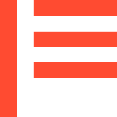

Stand at the landing site
The sky from the site
- Sun path, next lunar day
- Earth path
- Behind terrain
- Terrain
Map
Right now at this site
- Solar availability
- Earth line of sight
- Deep Space Network
- Not modelled
- Antenna pointing, link margin, and dish time shared with other missions.
Sun and Earth over time
Drag anywhere on the chart to move the clock. The top chart is how far the Sun and Earth clear the terrain; the lighter band just above zero is the terrain margin. The bars below are the yes or no answers that follow from it, with the share of the window on the right. A DSN dish is up when Goldstone, Madrid or Canberra has the Moon above 10°.
Lander and mission
Picking a lander fills in the numbers below. Change any of them to try your own design. "(assumed)" means the operator has not published that figure and it is our estimate.
Power
Mission
Communications
If you land here at this time
- Battery, mapped terrain
- Battery, terrain 0.3° higher
Simulating…
The battery charges in sunlight and drains through each night. The mission fails if the line enters the red reserve band. Orange shading marks hours in safe mode.
Landing risk
Landers never touch down exactly on target. This simulates a few thousand landings around your aim point, each a little off in position and timing, with small errors in solar output, power use and the terrain map. Landing on ground steeper than the safe slope counts as a loss. The share that still completes the mission is the chance of success.
Fine-tune the uncertainties
Landing time is a 3σ spread; the others are 1σ.
- Where the lander may come down
- Too steep
Contingency planning
Something going wrong partway through the mission, and whether the lander still gets through. Results show in the verdict above.
Mission design
Which combinations of solar output and battery size get through this mission, at this site and landing time. The green area passes even with the terrain margin. The ring is your lander. Click the chart to try a combination.
- Passes with the terrain margin
- Passes only without it
- Fails
Other landing dates
For a landing every 12 hours over the next 60 days: the battery your lander would need with the solar panels it has. The dashed line is your battery. Bars under the line are dates your lander already handles; hatched bars are marginal. Grey means no battery is big enough, usually because the landing would be in the dark or out of contact. Click to move the landing date.
If the launch slips
Compare sites over the same window
The same instant at every site: where the Sun and Earth sit against each site's own terrain horizon, with their paths over the next lunar day. Press Play, or drag the bars below, to watch them move together.
Each lane is a yes or no answer for the window, with its share on the right. Drag to move the clock.
Landing-date calendar
- Meets the needs
- Marginal
- Fails
- Selected day
One square is one landing day over the next twelve months, checked against the lander and mission set under Mission planning. Each column of seven is a week, grouped by month. Marginal means it passes only without the terrain margin. Tap a square to set the clock to that day.
Apollo 11 and Shackleton rim at the same moment
Both strips show a full 360° turn of the horizon at , with the measured terrain along the bottom. At the Apollo 11 site, close to the equator, the Sun climbs high during the lunar day and Earth stays about 66° up, barely moving. On Shackleton's rim, 7 km from the south pole, the Sun and Earth both stay within a few degrees of the horizon, in among the hills.
- Sun path, next lunar day
- Earth path
- Behind terrain
- Terrain
Why the Sun stays low at the pole
The Moon barely tilts
Earth's axis is tilted 23.4°, and that is why its poles get a summer with the Sun well up in the sky. The Moon's axis is tilted about 1.5°. At the lunar south pole the Sun goes all the way round the horizon once a month but never gets more than about 1.5° above a level horizon. Shadows stretch for kilometres, and whether a lander gets power often comes down to one ridge.
Earth sits on the horizon
The Moon keeps the same side facing Earth, so from a fixed spot Earth stays in roughly the same part of the sky. From the south pole, that part of the sky is right on the horizon. Libration, a slow rocking of the Moon as we see it, moves Earth up and down by a few degrees over about 27 days. When Earth drops behind the terrain, a lander that talks to Earth directly is out of contact until it comes back up, unless it has a relay satellite.
Why land there anyway
Some crater floors near the pole haven't had direct sunlight in billions of years. NASA's Lunar Reconnaissance Orbiter has measured temperatures below −230 °C in places, cold enough for water ice to last. Some rims and ridges a few kilometres away are sunlit most of the time. A lander wants both: ice within reach and enough light to keep its battery charged. The rest of this tool is about finding where and when you get both.
Method, accuracy and limits
| Check | Against | Result |
|---|---|---|
| Sun and Earth directions (SPICE path) | JPL DE421 ephemeris, 3,166 epochs at 6 sites | largest difference 0.000015° |
| Sun and Earth directions (Horizons path) | JPL SPICE DE440, one month at 4 sites | largest difference 0.000006° |
| Horizons, 80 m mode, mast 2 to 10 m | the original 80 m horizons of this app, 9 sites | within 0.05° |
| Mission verdicts, battery traces, failure messages | the original in-browser engine, 48 cases | identical |
| Monte Carlo random numbers, mission design results | the original in-browser engine | bit for bit / identical |
| What the 5 m maps change | 80 m terrain, 12 months, 2 m mast | Shackleton rim sunlit 86% → 82%; at the pole Earth in view 29% → 18% |
Positions
Sun and Earth positions come from NASA's JPL Horizons service, fetched by the Mons Carlo server one month at a time and cached (JPL's SPICE DE440 kernels stand in if Horizons cannot be reached). They are Moon-fixed vectors, so lunar libration and the parallax between the Moon's centre and the site are included. Checked against JPL's DE421 ephemeris through SPICE (3,166 epochs at six sites): the largest difference is 0.000015°. Rise and set times are refined to a few seconds after an hourly search.
Terrain
Tiers, named beside every site. The server ray-casts every horizon (720 directions, out to 330 km) from NASA's LOLA elevation models: the 5 m site maps where they exist (Shackleton rim, the connecting ridge, de Gerlache rim, the Chang'e 7 target and the pole), the 80 m south-pole model from 80°S, the 240 m model from 60°S, and a 1/8° to 1/4° LOLA grid elsewhere. The same terrain draws the surface view and the shadow map.
Limits
What the model leaves out, grouped by topic. Read these before trusting a close result.
Power and heat
- Power is geometry: array output in full Sun times the visible fraction of the solar disc, scaled for Sun distance. Temperature, dust, array pointing limits and degradation are not modelled.
- "Stricter physics" under Contingency planning tightens three of these rules: the link then needs the whole Earth disc (0.95° above the terrain), a fixed panel loses the light its cover glass reflects at a slant (Fresnel, refractive index 1.5), and the battery returns 95% of what it holds. It also dims the Sun toward its edge (limb darkening 0.6), which changes the energy by less than 0.1%.
- "Heat model" under Contingency planning adds a one-node heat balance: the body is warmed by the power it uses and the sunlight it absorbs, loses heat by radiation (an insulated body that leaks 68 W at −20 °C, 60 kJ/K of thermal mass), and heaters hold it at −20 °C. Their power is added to the load. A radiator is assumed to shed excess heat above 40 °C, so overheating is not a failure here. It is a first estimate, not a thermal design.
- When Earth passes in front of the Sun (a lunar eclipse seen from the Moon), sunlight is reduced by the share of the solar disc Earth covers. At the south pole this happens once in the planning window, on 17 August 2027, when about 45% of the sunlight is lost for three hours.
Communications
- Earth contact means line of sight to Earth's centre and, with the DSN option on, the Moon at least 10° above the horizon at Goldstone, Madrid or Canberra (positions from SPICE). Dish scheduling, link margin and weather are not modelled.
- Hourly sampling can miss a visibility window shorter than an hour.
Terrain and landing
- At 400 m and coarser, features smaller than the grid are smoothed. Use the terrain margin to see how sensitive a result is.
- The landing-risk analysis ray-casts each touchdown cell on the server from the finest terrain there (5 m where a site map exists, else 80 m), sampled every 30 m near the cell. Hazards smaller than that are not seen.
- Slope is measured over about 160 m, so boulders and small craters are not seen.
Simulation results
- The chance of success comes with a 95% interval that reflects the finite number of simulated missions only. It is not a mission reliability guarantee: the spreads fed in are assumptions you can change under "Fine-tune the uncertainties".
- Mission design sizes solar output and battery only. It does not estimate mass, cost or volume.
- With safe mode on, survival is not always helped by more hardware: shedding load early can let a smaller array or battery pass where a larger one fails. Mission design then shows a passing size that may not be the smallest.
- Contingency planning applies one scenario at a time (a custom scenario can combine several effects), and safe mode is a simple rule. Neither models how real flight software behaves.
Input data
- Coordinates of planned missions are published targets and may change.
- Lander presets use published figures where they exist. Anything marked (assumed) is an estimate. Side-mounted panels are modelled; top-deck panels are left out.
Data: NASA GSFC PGDA LOLA elevation models (Barker et al., products 78 and 90), LOLA global grid and Moon mosaic from the LLNL ssa-data-lunar package; ephemeris from JPL Horizons and JPL NAIF SPICE kernels. Software: FastAPI, Uvicorn, Pydantic, NumPy, SciPy, pandas, Requests, tifffile, imagecodecs and SpiceyPy on the server; the page is plain JavaScript set in IBM Plex Sans, IBM Plex Mono and Space Grotesk, served with the page. The full list with licences is in the project README. Every number on this page comes from the Mons Carlo server; its API is documented at /docs. Reference tools: JPL Horizons, LROC Quickmap, Moon Trek.
About us
We're three friends who studied together at the University of Bath. We built Mons Carlo for the NASA Space Apps Challenge 2026 to show where and when a lander at the Moon's south pole can get sunlight and talk to Earth.
